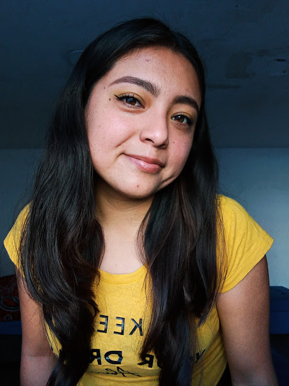

Ruth Marin
Ruth Marin
Biografía
 Ruth Marin Martinez nació el 23 de junio de 2001 en la ciudad de Puebla, Puebla. Desde la niñez radicó en la junta auxiliar de San Pablo Xochimehuacan, ella disfrutaba de las actividades que incluían métodos kinestésicos porque le gustaba usar papel, pegamento y colores. En el nivel medio superior continúa mostrando responsabilidad y se da cuenta de que si quería estudiar algo, tenía que ser algo creativo, entonces se metió a la actividad extracurricular de dibujo que era lo más cercano a algo creativo aunque no aprendió lo básico le gustó, por lo que en tercer año se acomoda en el grupo de comunicación ahí se le hizo interesante ver que la comunicación es algo complejo y que necesita que alguien sea el intermediario entre emisor y receptor, así que confirmó que quería hacer algo relacionado con eso por lo que aplica para la licenciatura de diseño gráfico, actualmente se encuentra desarrollando sus últimos semestres de la licenciatura con proyectos reales, siguiendo con la constancia y compromiso que siempre ha mostrado.